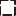

<!doctype html>
<html lang="en">
    <head>
        <meta charset="utf-8">
        <meta http-equiv="X-UA-Compatible" content="IE=edge">
        <meta name="viewport" content="initial-scale=1,user-scalable=no,maximum-scale=1,width=device-width">
        <meta name="mobile-web-app-capable" content="yes">
        <meta name="apple-mobile-web-app-capable" content="yes">
        <link rel="stylesheet" href="css/leaflet.css"><link rel="stylesheet" href="css/L.Control.Locate.min.css">
        <link rel="stylesheet" href="css/qgis2web.css"><link rel="stylesheet" href="css/fontawesome-all.min.css">
        <link rel="stylesheet" href="css/leaflet-search.css">
        <link rel="stylesheet" href="css/leaflet-measure.css">
        <style>
        html, body, #map {
            width: 100%;
            height: 100%;
            padding: 0;
            margin: 0;
        }
        </style>
        <title></title>
    </head>
    <body>
        <div id="map">
        </div>
        <script src="js/qgis2web_expressions.js"></script>
        <script src="js/leaflet.js"></script><script src="js/L.Control.Locate.min.js"></script>
        <script src="js/leaflet.rotatedMarker.js"></script>
        <script src="js/leaflet.pattern.js"></script>
        <script src="js/leaflet-hash.js"></script>
        <script src="js/Autolinker.min.js"></script>
        <script src="js/rbush.min.js"></script>
        <script src="js/labelgun.min.js"></script>
        <script src="js/labels.js"></script>
        <script src="js/leaflet-measure.js"></script>
        <script src="js/leaflet-search.js"></script>
        <script src="data/Populationdata_5.js"></script>
        <script src="data/Adminboundaries_6.js"></script>
        <script>
        var highlightLayer;
        function highlightFeature(e) {
            highlightLayer = e.target;

            if (e.target.feature.geometry.type === 'LineString') {
              highlightLayer.setStyle({
                color: '#ffff00',
              });
            } else {
              highlightLayer.setStyle({
                fillColor: '#ffff00',
                fillOpacity: 1
              });
            }
        }
        var map = L.map('map', {
            zoomControl:true, maxZoom:28, minZoom:1
        }).fitBounds([[-5.0164144238847515,29.660990850698276],[-3.7936848430156593,31.837499310330834]]);
        var hash = new L.Hash(map);
        map.attributionControl.setPrefix('<a href="https://github.com/tomchadwin/qgis2web" target="_blank">qgis2web</a> &middot; <a href="https://leafletjs.com" title="A JS library for interactive maps">Leaflet</a> &middot; <a href="https://qgis.org">QGIS</a>');
        var autolinker = new Autolinker({truncate: {length: 30, location: 'smart'}});
        L.control.locate({locateOptions: {maxZoom: 19}}).addTo(map);
        var measureControl = new L.Control.Measure({
            position: 'topleft',
            primaryLengthUnit: 'meters',
            secondaryLengthUnit: 'kilometers',
            primaryAreaUnit: 'sqmeters',
            secondaryAreaUnit: 'hectares'
        });
        measureControl.addTo(map);
        document.getElementsByClassName('leaflet-control-measure-toggle')[0]
        .innerHTML = '';
        document.getElementsByClassName('leaflet-control-measure-toggle')[0]
        .className += ' fas fa-ruler';
        var bounds_group = new L.featureGroup([]);
        function setBounds() {
        }
        map.createPane('pane_Background_0');
        map.getPane('pane_Background_0').style.zIndex = 400;
        var layer_Background_0 = L.tileLayer('http://tile.openstreetmap.org/{z}/{x}/{y}.png', {
            pane: 'pane_Background_0',
            opacity: 1.0,
            attribution: '<a href="https://www.openstreetmap.org/copyright">© OpenStreetMap contributors, CC-BY-SA</a>',
            minZoom: 1,
            maxZoom: 28,
            minNativeZoom: 0,
            maxNativeZoom: 19
        });
        layer_Background_0;
        map.addLayer(layer_Background_0);
        map.createPane('pane_Background_1');
        map.getPane('pane_Background_1').style.zIndex = 401;
        var layer_Background_1 = L.tileLayer('https://mt1.google.com/vt/lyrs=p&x={x}&y={y}&z={z}', {
            pane: 'pane_Background_1',
            opacity: 1.0,
            attribution: '<a href="https://www.google.at/permissions/geoguidelines/attr-guide.html">Map data ©2015 Google</a>',
            minZoom: 1,
            maxZoom: 28,
            minNativeZoom: 0,
            maxNativeZoom: 20
        });
        layer_Background_1;
        map.addLayer(layer_Background_1);
        map.createPane('pane_SoilCarbon_2');
        map.getPane('pane_SoilCarbon_2').style.zIndex = 402;
        var img_SoilCarbon_2 = 'data/SoilCarbon_2.png';
        var img_bounds_SoilCarbon_2 = [[-5.095,29.895],[-3.7775,30.927500000000002]];
        var layer_SoilCarbon_2 = new L.imageOverlay(img_SoilCarbon_2,
                                              img_bounds_SoilCarbon_2,
                                              {pane: 'pane_SoilCarbon_2'});
        bounds_group.addLayer(layer_SoilCarbon_2);
        map.addLayer(layer_SoilCarbon_2);
        map.createPane('pane_LandProductivity_3');
        map.getPane('pane_LandProductivity_3').style.zIndex = 403;
        var img_LandProductivity_3 = 'data/LandProductivity_3.png';
        var img_bounds_LandProductivity_3 = [[-5.095,29.895],[-3.7775,30.927500000000002]];
        var layer_LandProductivity_3 = new L.imageOverlay(img_LandProductivity_3,
                                              img_bounds_LandProductivity_3,
                                              {pane: 'pane_LandProductivity_3'});
        bounds_group.addLayer(layer_LandProductivity_3);
        map.addLayer(layer_LandProductivity_3);
        map.createPane('pane_LandDegradation_4');
        map.getPane('pane_LandDegradation_4').style.zIndex = 404;
        var img_LandDegradation_4 = 'data/LandDegradation_4.png';
        var img_bounds_LandDegradation_4 = [[-5.095,29.895],[-3.7775,30.927500000000002]];
        var layer_LandDegradation_4 = new L.imageOverlay(img_LandDegradation_4,
                                              img_bounds_LandDegradation_4,
                                              {pane: 'pane_LandDegradation_4'});
        bounds_group.addLayer(layer_LandDegradation_4);
        map.addLayer(layer_LandDegradation_4);
        function pop_Populationdata_5(feature, layer) {
            layer.on({
                mouseout: function(e) {
                    for (i in e.target._eventParents) {
                        e.target._eventParents[i].resetStyle(e.target);
                    }
                },
                mouseover: highlightFeature,
            });
            var popupContent = '<table>\
                    <tr>\
                        <td colspan="2"><strong>ID No.</strong><br />' + (feature.properties['fid'] !== null ? autolinker.link(feature.properties['fid'].toLocaleString()) : '') + '</td>\
                    </tr>\
                    <tr>\
                        <td colspan="2"><strong>Ward Name</strong><br />' + (feature.properties['Ward_Name'] !== null ? autolinker.link(feature.properties['Ward_Name'].toLocaleString()) : '') + '</td>\
                    </tr>\
                    <tr>\
                        <td colspan="2"><strong>Division</strong><br />' + (feature.properties['Division'] !== null ? autolinker.link(feature.properties['Division'].toLocaleString()) : '') + '</td>\
                    </tr>\
                    <tr>\
                        <td colspan="2"><strong>Population </strong><br />' + (feature.properties['Population '] !== null ? autolinker.link(feature.properties['Population '].toLocaleString()) : '') + '</td>\
                    </tr>\
                </table>';
            layer.bindPopup(popupContent, {maxHeight: 400});
        }

        function style_Populationdata_5_0(feature) {
            if (feature.properties['Population '] >= 4903.000000 && feature.properties['Population '] <= 30108.800000 ) {
                return {
                pane: 'pane_Populationdata_5',
                opacity: 1,
                color: 'rgba(30,12,12,1.0)',
                dashArray: '10,5',
                lineCap: 'butt',
                lineJoin: 'miter',
                weight: 2.0, 
                fill: true,
                fillOpacity: 1,
                fillColor: 'rgba(247,252,245,1.0)',
                interactive: true,
            }
            }
            if (feature.properties['Population '] >= 30108.800000 && feature.properties['Population '] <= 55314.600000 ) {
                return {
                pane: 'pane_Populationdata_5',
                opacity: 1,
                color: 'rgba(30,12,12,1.0)',
                dashArray: '10,5',
                lineCap: 'butt',
                lineJoin: 'miter',
                weight: 2.0, 
                fill: true,
                fillOpacity: 1,
                fillColor: 'rgba(201,234,194,1.0)',
                interactive: true,
            }
            }
            if (feature.properties['Population '] >= 55314.600000 && feature.properties['Population '] <= 80520.400000 ) {
                return {
                pane: 'pane_Populationdata_5',
                opacity: 1,
                color: 'rgba(30,12,12,1.0)',
                dashArray: '10,5',
                lineCap: 'butt',
                lineJoin: 'miter',
                weight: 2.0, 
                fill: true,
                fillOpacity: 1,
                fillColor: 'rgba(123,199,124,1.0)',
                interactive: true,
            }
            }
            if (feature.properties['Population '] >= 80520.400000 && feature.properties['Population '] <= 105726.200000 ) {
                return {
                pane: 'pane_Populationdata_5',
                opacity: 1,
                color: 'rgba(30,12,12,1.0)',
                dashArray: '10,5',
                lineCap: 'butt',
                lineJoin: 'miter',
                weight: 2.0, 
                fill: true,
                fillOpacity: 1,
                fillColor: 'rgba(42,146,75,1.0)',
                interactive: true,
            }
            }
            if (feature.properties['Population '] >= 105726.200000 && feature.properties['Population '] <= 130932.000000 ) {
                return {
                pane: 'pane_Populationdata_5',
                opacity: 1,
                color: 'rgba(30,12,12,1.0)',
                dashArray: '10,5',
                lineCap: 'butt',
                lineJoin: 'miter',
                weight: 2.0, 
                fill: true,
                fillOpacity: 1,
                fillColor: 'rgba(0,68,27,1.0)',
                interactive: true,
            }
            }
        }
        map.createPane('pane_Populationdata_5');
        map.getPane('pane_Populationdata_5').style.zIndex = 405;
        map.getPane('pane_Populationdata_5').style['mix-blend-mode'] = 'normal';
        var layer_Populationdata_5 = new L.geoJson(json_Populationdata_5, {
            attribution: '',
            interactive: true,
            dataVar: 'json_Populationdata_5',
            layerName: 'layer_Populationdata_5',
            pane: 'pane_Populationdata_5',
            onEachFeature: pop_Populationdata_5,
            style: style_Populationdata_5_0,
        });
        bounds_group.addLayer(layer_Populationdata_5);
        map.addLayer(layer_Populationdata_5);
        function pop_Adminboundaries_6(feature, layer) {
            layer.on({
                mouseout: function(e) {
                    for (i in e.target._eventParents) {
                        e.target._eventParents[i].resetStyle(e.target);
                    }
                },
                mouseover: highlightFeature,
            });
            var popupContent = '<table>\
                    <tr>\
                        <td colspan="2"><strong>ID No.</strong><br />' + (feature.properties['fid'] !== null ? autolinker.link(feature.properties['fid'].toLocaleString()) : '') + '</td>\
                    </tr>\
                    <tr>\
                        <td colspan="2"><strong>Ward Name</strong><br />' + (feature.properties['Ward_Name'] !== null ? autolinker.link(feature.properties['Ward_Name'].toLocaleString()) : '') + '</td>\
                    </tr>\
                    <tr>\
                        <td colspan="2"><strong>Division</strong><br />' + (feature.properties['Division'] !== null ? autolinker.link(feature.properties['Division'].toLocaleString()) : '') + '</td>\
                    </tr>\
                    <tr>\
                        <td colspan="2"><strong>Population </strong><br />' + (feature.properties['Population '] !== null ? autolinker.link(feature.properties['Population '].toLocaleString()) : '') + '</td>\
                    </tr>\
                </table>';
            layer.bindPopup(popupContent, {maxHeight: 400});
        }

        function style_Adminboundaries_6_0() {
            return {
                pane: 'pane_Adminboundaries_6',
                opacity: 1,
                color: 'rgba(30,12,12,1.0)',
                dashArray: '10,5',
                lineCap: 'square',
                lineJoin: 'bevel',
                weight: 2.0,
                fillOpacity: 0,
                interactive: true,
            }
        }
        map.createPane('pane_Adminboundaries_6');
        map.getPane('pane_Adminboundaries_6').style.zIndex = 406;
        map.getPane('pane_Adminboundaries_6').style['mix-blend-mode'] = 'normal';
        var layer_Adminboundaries_6 = new L.geoJson(json_Adminboundaries_6, {
            attribution: '',
            interactive: true,
            dataVar: 'json_Adminboundaries_6',
            layerName: 'layer_Adminboundaries_6',
            pane: 'pane_Adminboundaries_6',
            onEachFeature: pop_Adminboundaries_6,
            style: style_Adminboundaries_6_0,
        });
        bounds_group.addLayer(layer_Adminboundaries_6);
        map.addLayer(layer_Adminboundaries_6);
        var baseMaps = {};
        L.control.layers(baseMaps,{' Admin boundaries': layer_Adminboundaries_6,'Population data<br /><table><tr><td style="text-align: center;"></td><td>4903 - 30109</td></tr><tr><td style="text-align: center;"></td><td>30109 - 55315</td></tr><tr><td style="text-align: center;"></td><td>55315 - 80520</td></tr><tr><td style="text-align: center;"></td><td>80520 - 105726</td></tr><tr><td style="text-align: center;"></td><td>105726 - 130932</td></tr></table>': layer_Populationdata_5,"Land Degradation": layer_LandDegradation_4,"Land Productivity": layer_LandProductivity_3,"Soil Carbon": layer_SoilCarbon_2,"Background": layer_Background_1,"Background": layer_Background_0,}).addTo(map);
        setBounds();
        var i = 0;
        layer_Populationdata_5.eachLayer(function(layer) {
            var context = {
                feature: layer.feature,
                variables: {}
            };
            layer.bindTooltip((exp_label_Populationdata_5_eval_expression(context) !== null?String('<div style="color: #323232; font-size: 10pt; font-family: \'Open Sans\', sans-serif;">' + exp_label_Populationdata_5_eval_expression(context)) + '</div>':''), {permanent: true, offset: [-0, -16], className: 'css_Populationdata_5'});
            labels.push(layer);
            totalMarkers += 1;
              layer.added = true;
              addLabel(layer, i);
              i++;
        });
        map.addControl(new L.Control.Search({
            layer: layer_Populationdata_5,
            initial: false,
            hideMarkerOnCollapse: true,
            propertyName: 'Ward_Name'}));
        document.getElementsByClassName('search-button')[0].className +=
         ' fa fa-binoculars';
        L.ImageOverlay.include({
            getBounds: function () {
                return this._bounds;
            }
        });
        resetLabels([layer_Populationdata_5,layer_Adminboundaries_6]);
        map.on("zoomend", function(){
            resetLabels([layer_Populationdata_5,layer_Adminboundaries_6]);
        });
        map.on("layeradd", function(){
            resetLabels([layer_Populationdata_5,layer_Adminboundaries_6]);
        });
        map.on("layerremove", function(){
            resetLabels([layer_Populationdata_5,layer_Adminboundaries_6]);
        });
        </script>
    </body>
</html>
